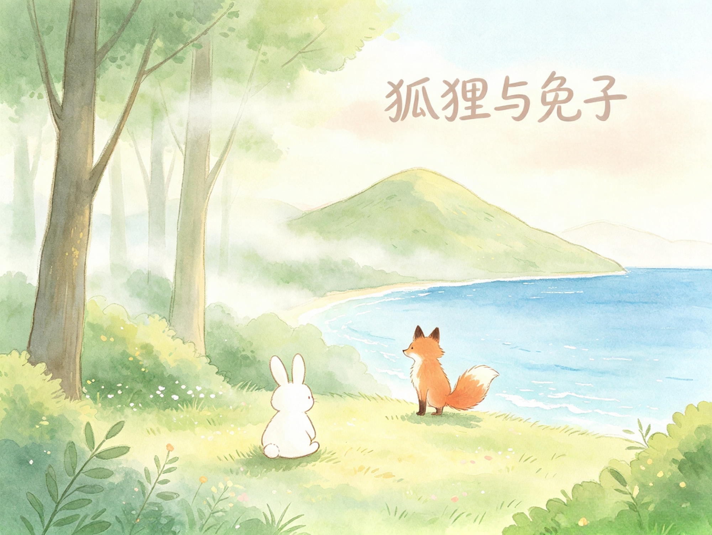

暗恋见君
原创治愈童话 · 故事与绘本并读
在很久很久以前，在山的那边，嗯，不在海的那边，在海的旁边，在山的深处，有一只狐狸和一只可爱的兔子。
很久很久以前，在海的旁边，山的深处
小狐狸住在山的那边，从小被教导要狡诈、要聪明、不要天真地交朋友。 小兔子独自住在海边山深处的小屋，抱着胡萝卜，对世界满是好奇。
二十幕交织阅读 · 可点目录跳转
请启用 JavaScript 以加载二十幕故事与绘本并读内容。